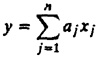
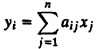
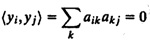

| Previous | Table of Contents | Next |
If there is a significant correlation between different workload parameters, the workload should be characterized using multiparameter histograms. An n-dimensional matrix (or histogram) is used to describe the distribution of n workload parameters.
Figure 6.2 shows an example of a simplistic plot of a two-parameter joint histogram. The number of frames sent and received by stations on a local-area network are plotted. Each dot in the figure represents a station. The number of dots in a square represents the number of stations that sent and received the frames in the range corresponding to the cell. Generally, the stations sending a large number of frames are also the ones that receive a large number of frames. Thus, there is a significant correlation between the two parameters.
It is difficult to plot joint histograms for more than two parameters. Also, as discussed before, even single-parameter histrograms are too detailed in some cases. Multiparameter histograms are even more detailed; they are therefore rarely used.
One technique commonly used to classify workload components is by the weighted sum of their parameter values. Using aj as weight for the jth parameter xj, the weighted sum y is

This sum can then be used to classify the components into a number of classes such as low demand or medium demand. Although this technique is commonly used in performance analysis software, in most cases, the person running the software is asked to choose the weight. Without any concrete guidelines, the person may assign weights such that workload components with very different characteristics may be grouped together, and the mean characteristics of the group may not correspond to any member.
One method of determining the weights in such situations is to use the principal-component analysis, which allows finding the weights wi’s such that yj’s provide the maximum discrimination among the components. The quantity yj is called the principal factor.1 Statistically, given a set of n parameters {x1,x2,...,xn}, the principal-component analysis produces a set of factors {y1,y2,...,yn} such that the following holds:
1The correct term is principal component. However, to avoid confusion with workload components, the term principal factor, which has a slightly different meaning in factor analysis, is used here.


Example 6.1 lists the key steps in finding principal factors and also illustrates them. The reader interested in further details of this technique should consult a book on factor analysis, for example, Harman (1976).
| Previous | Table of Contents | Next |